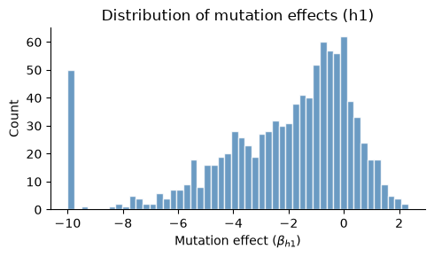
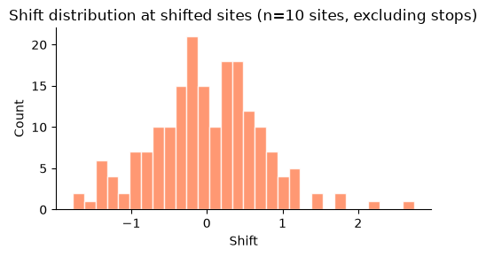
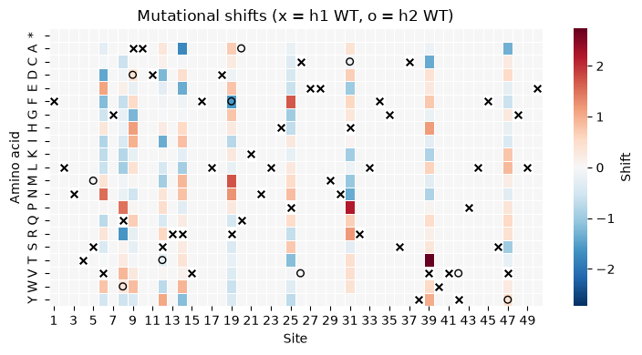
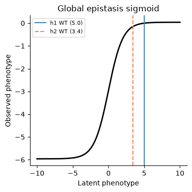
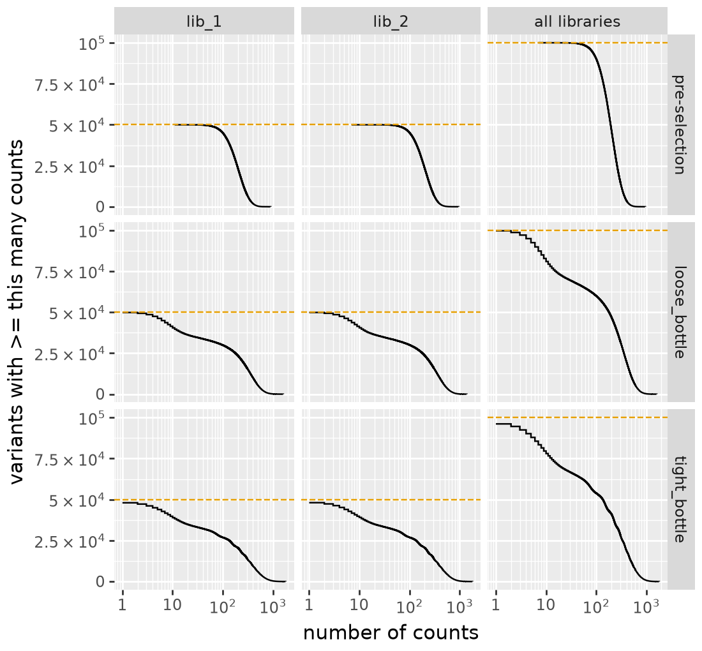
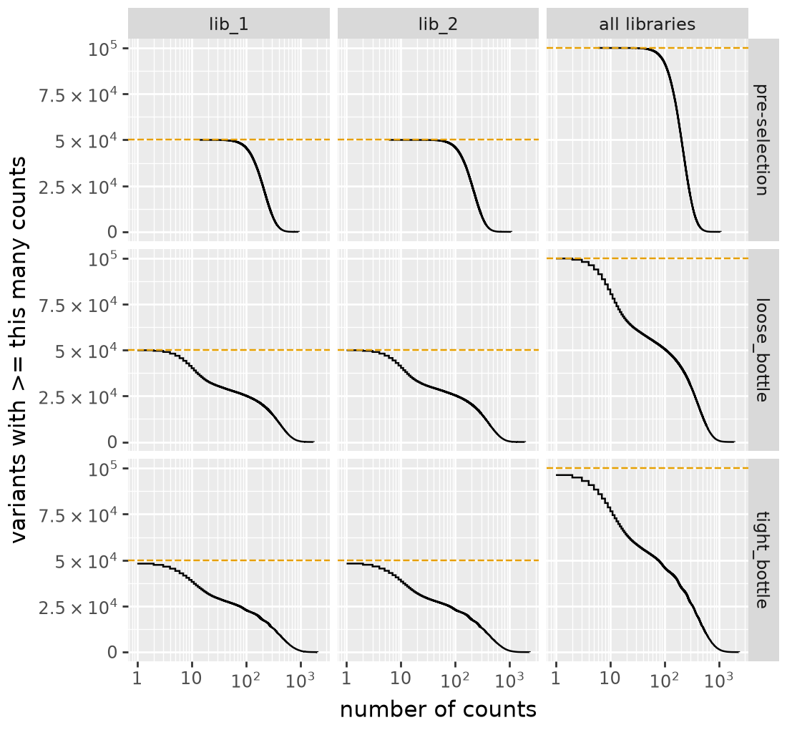
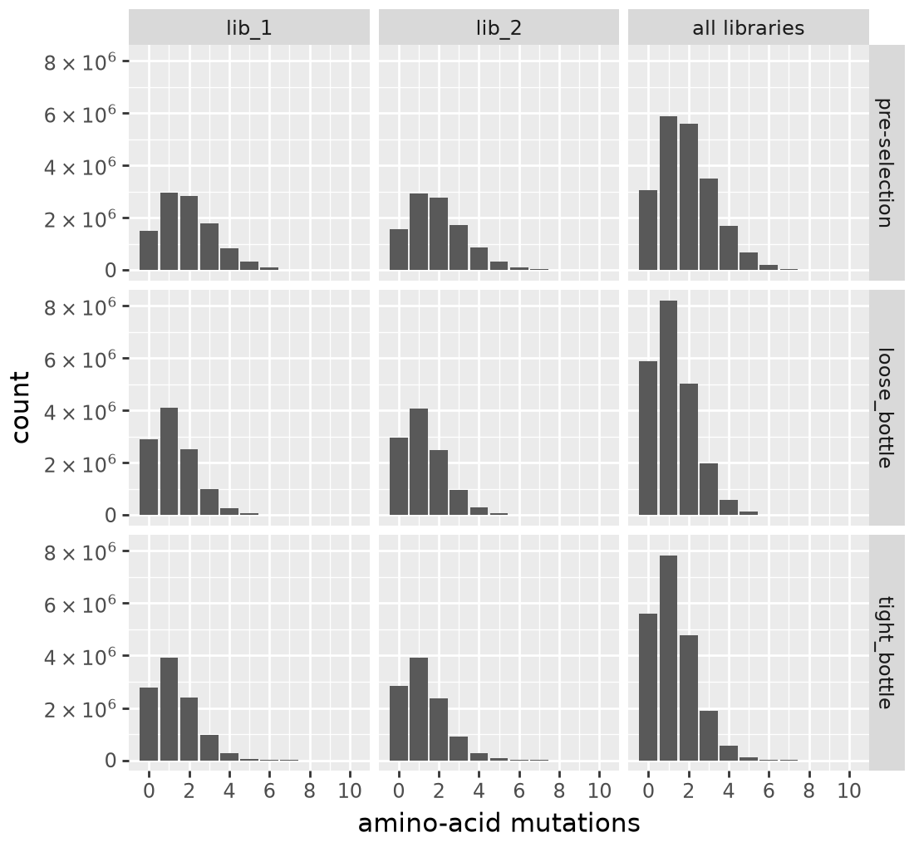
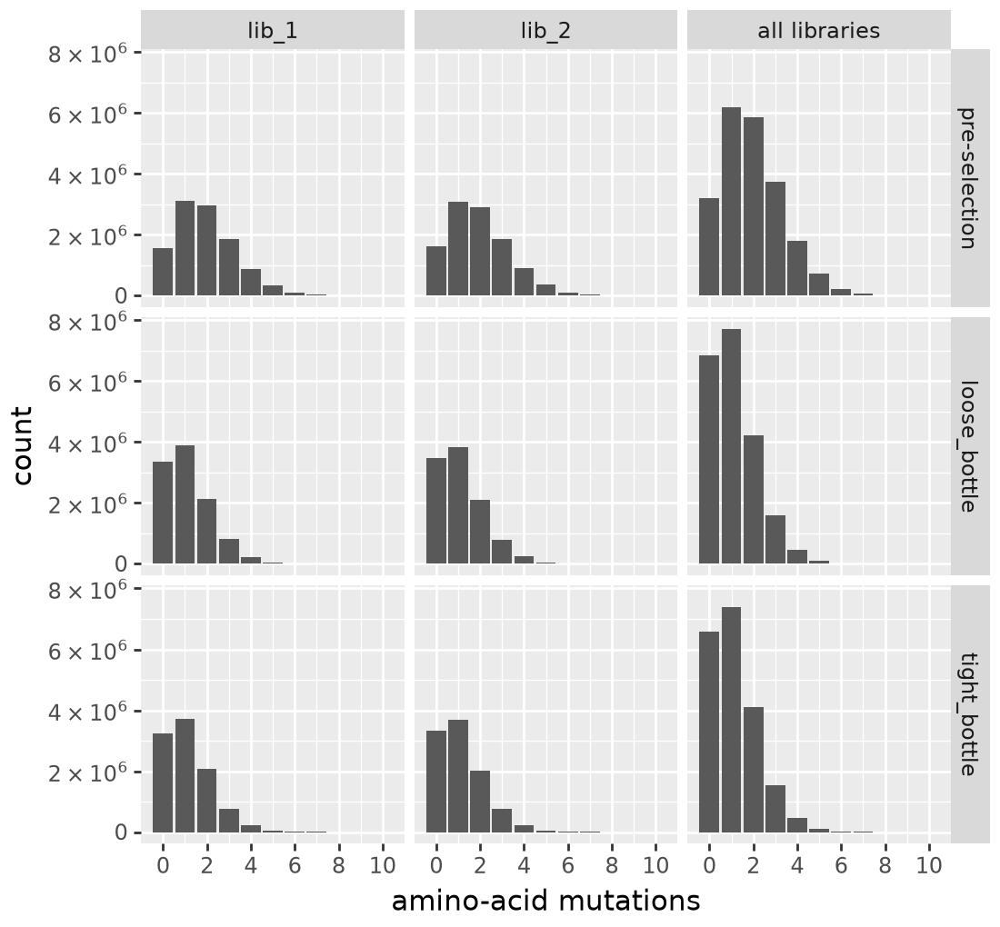
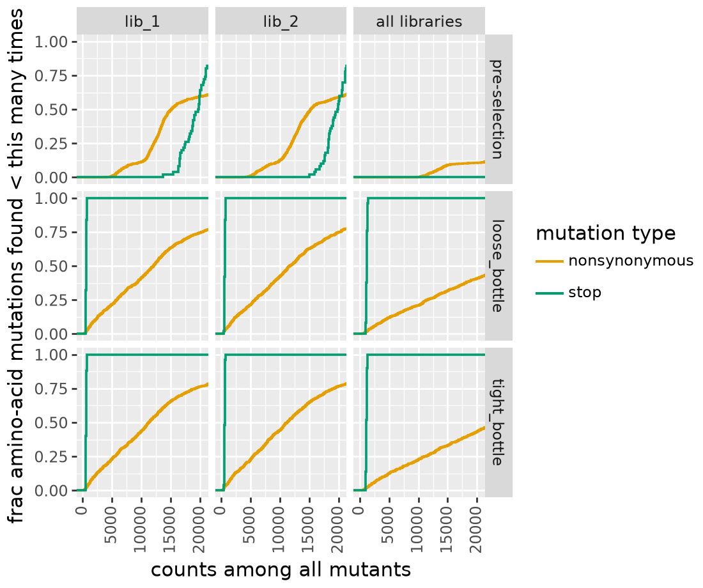
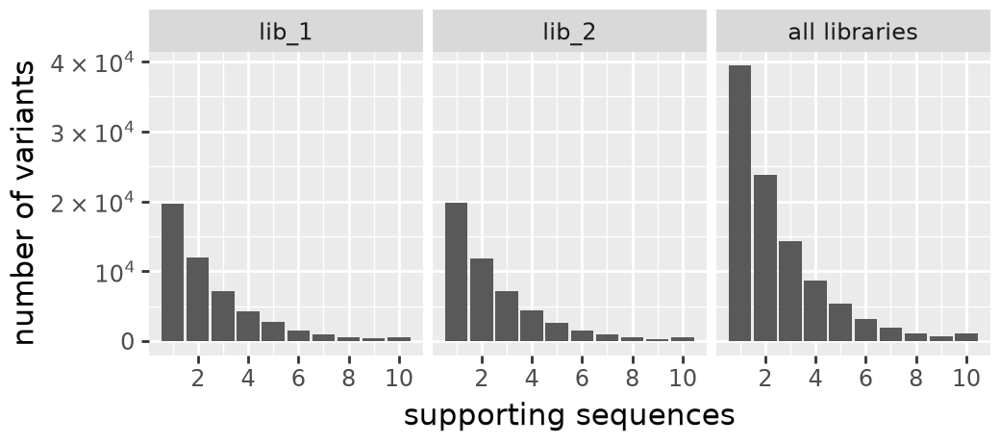

Simulation Data Generation¶
Generate synthetic DMS data for two homologs (h1, h2) with known mutational effects, shifts, and global epistasis. This notebook produces the ground-truth datasets used by all downstream simulation notebooks.
Outline
Simulate a reference gene sequence and mutational effects
Create a second homolog with non-identical sites
Assign shifted mutational effects between homologs
Simulate variant libraries and functional scores
Save results and visualize distributions
[1]:
import warnings
warnings.filterwarnings("ignore")
import os
import sys
sys.path.insert(0, "notebooks")
import Bio.Seq
import dms_variants.simulate
import matplotlib.pyplot as plt
import numpy as np
import pandas as pd
import random
import seaborn as sns
from dms_variants.constants import (
AA_TO_CODONS,
AAS_NOSTOP,
AAS_WITHSTOP,
CODONS_NOSTOP,
)
from multidms.utils import split_sub
from _common import build_phenotype_fxn_dict, load_config
%matplotlib inline
[2]:
config_path = "config/config.yaml"
output_dir = None
[3]:
# Parameters
config_path = "config/config.yaml"
output_dir = "results-prod-287-config-tier-split"
[4]:
# Load configuration and extract simulation parameters
config = load_config(config_path)
sim = config["simulation"]
seed = config["seed"]
genelength = sim["genelength"]
wt_latent = sim["wt_latent"]
stop_effect = sim["stop_effect"]
norm_weights = tuple(tuple(w) for w in sim["norm_weights"])
n_non_identical_sites = sim["n_non_identical_sites"]
min_muteffect_in_bundle = sim["min_muteffect_in_bundle"]
max_muteffect_in_bundle = sim["max_muteffect_in_bundle"]
n_shifted_non_identical_sites = sim["n_shifted_non_identical_sites"]
n_shifted_identical_sites = sim["n_shifted_identical_sites"]
shift_gauss_variance = sim["shift_gauss_variance"]
sigmoid_phenotype_scale = sim["sigmoid_phenotype_scale"]
variants_per_lib_genelength_scalar = sim["variants_per_lib_genelength_scalar"]
avgmuts = sim["avgmuts"]
bclen = sim["bclen"]
variant_error_rate = sim["variant_error_rate"]
avgdepth_per_variant = sim["avgdepth_per_variant"]
lib_uniformity = sim["lib_uniformity"]
noise = sim["noise"]
bottleneck_variants_per_lib_scalar = sim["bottleneck_variants_per_lib_scalar"]
if output_dir is None:
output_dir = sim["output_dir"]
train_frac = config["train_frac"]
random.seed(seed)
np.random.seed(seed)
os.makedirs(output_dir, exist_ok=True)
print(f"Output directory: {output_dir}")
Output directory: results-prod-287-config-tier-split
Simulate reference sequence¶
[5]:
geneseq_h1 = "".join(random.choices(CODONS_NOSTOP, k=genelength))
aaseq_h1 = str(Bio.Seq.Seq(geneseq_h1).translate())
print(f"Wildtype gene of {genelength} codons:\n{geneseq_h1}")
print(f"Wildtype protein:\n{aaseq_h1}")
Wildtype gene of 50 codons:
TTCTTAAATACCTCAGTAGGACAGGCAGCCGATAGCCGGCGAGTATTTTTAGACCGTCAAAAGAACCTACATCCTTGCGAAGAGATGAACCATAGACTTTTTGGCAGTTGCTACGTATGGGTGTACCCCTTGTTCAGCGTCGGTCTAGAA
Wildtype protein:
FLNTSVGQAADSRRVFLDRQKNLHPCEEMNHRLFGSCYVWVYPLFSVGLE
Mutational effects¶
Simulate latent mutational effects using a SigmoidPhenotypeSimulator.
[6]:
mut_pheno_args = {
"geneseq": geneseq_h1,
"wt_latent": wt_latent,
"seed": seed,
"stop_effect": stop_effect,
"norm_weights": norm_weights,
}
SigmoidPhenotype_h1 = dms_variants.simulate.SigmoidPhenotypeSimulator(
**mut_pheno_args
)
SigmoidPhenotype_h2 = dms_variants.simulate.SigmoidPhenotypeSimulator(
**mut_pheno_args
)
Non-reference homolog sequence¶
Simulate a second homolog by introducing mutations at non-identical sites.
[7]:
non_identical_sites = sorted(
random.sample(range(1, len(aaseq_h1) + 1), n_non_identical_sites)
)
aaseq_h2 = ""
geneseq_h2 = ""
for aa_n, aa in enumerate(aaseq_h1, 1):
codon = geneseq_h1[(aa_n - 1) * 3 : 3 * aa_n]
if aa_n in non_identical_sites:
valid_bundle_mutations = [
mut_aa
for mut_aa in AAS_NOSTOP
if (
(mut_aa != aa)
and (
SigmoidPhenotype_h1.muteffects[f"{aa}{aa_n}{mut_aa}"]
> min_muteffect_in_bundle
)
and (
SigmoidPhenotype_h1.muteffects[f"{aa}{aa_n}{mut_aa}"]
< max_muteffect_in_bundle
)
)
]
assert len(valid_bundle_mutations) > 0, aa_n
mut_aa = random.choice(valid_bundle_mutations)
aaseq_h2 += mut_aa
mut_codon = random.choice(AA_TO_CODONS[mut_aa])
geneseq_h2 += mut_codon
else:
aaseq_h2 += aa
geneseq_h2 += codon
homolog_seqs_df = pd.DataFrame(
{"wt_aa_h1": list(aaseq_h1), "wt_aa_h2": list(aaseq_h2)},
index=range(1, len(aaseq_h1) + 1),
)
homolog_seqs_df.index.name = "site"
n_diffs = len(homolog_seqs_df.query("wt_aa_h1 != wt_aa_h2"))
print("Sequence alignment of homologs h1 and h2:")
print("h1", aaseq_h1)
print("h2", aaseq_h2)
print("Number of aa differences:", n_diffs)
assert len(aaseq_h1) == len(aaseq_h2)
assert aaseq_h2 == str(Bio.Seq.Seq(geneseq_h2).translate())
assert n_diffs == len(non_identical_sites)
Sequence alignment of homologs h1 and h2:
h1 FLNTSVGQAADSRRVFLDRQKNLHPCEEMNHRLFGSCYVWVYPLFSVGLE
h2 FLNTMVGWDADTRRVFLDFAKNLHPVEEMNCRLFGSCYVWVVPLFSYGLE
Number of aa differences: 10
Shifted mutational effects¶
Randomly choose sites with shifted effects between homologs.
[8]:
shifted_non_identical_sites = sorted(
random.sample(non_identical_sites, n_shifted_non_identical_sites)
)
shifted_identical_sites = sorted(
random.sample(
list(set(range(1, len(aaseq_h1) + 1)) - set(non_identical_sites)),
n_shifted_identical_sites,
)
)
shifted_sites = sorted(shifted_identical_sites + shifted_non_identical_sites)
assert len(shifted_sites) == len(set(shifted_sites))
print("Sites with shifts that are...")
print(
f"identical (n={len(shifted_identical_sites)}):",
", ".join(map(str, shifted_identical_sites)),
)
print(
f"non-identical (n={len(shifted_non_identical_sites)}):",
", ".join(map(str, shifted_non_identical_sites)),
)
Sites with shifts that are...
identical (n=4): 6, 14, 25, 39
non-identical (n=6): 8, 9, 12, 19, 31, 47
[9]:
def sim_mut_shift(shifted_site, mutation):
"""Draw a Gaussian shift for shifted sites, 0 otherwise."""
if (not shifted_site) or ("*" in mutation):
return 0
else:
return np.random.normal(loc=0, scale=shift_gauss_variance, size=1)[0]
mut_effects_df = (
pd.DataFrame.from_dict(
SigmoidPhenotype_h1.muteffects, orient="index", columns=["beta_h1"]
)
.reset_index()
.rename(columns={"index": "mutation"})
.assign(
wt_aa=lambda x: x["mutation"].apply(lambda y: split_sub(y)[0]),
site=lambda x: x["mutation"].apply(lambda y: int(split_sub(y)[1])),
mut_aa=lambda x: x["mutation"].apply(lambda y: split_sub(y)[2]),
shifted_site=lambda x: x["site"].isin(shifted_sites),
shift=lambda x: x.apply(
lambda row: sim_mut_shift(row["shifted_site"], row["mutation"]),
axis=1,
),
beta_h2=lambda x: x["beta_h1"] + x["shift"],
)
.merge(homolog_seqs_df, left_on="site", right_index=True, how="left")
.assign(bundle_mut=lambda x: x["mut_aa"] == x["wt_aa_h2"])
)
mut_effects_df[mut_effects_df["shifted_site"]][
[
"site",
"wt_aa_h1",
"wt_aa_h2",
"mutation",
"beta_h1",
"shift",
"beta_h2",
"shifted_site",
]
]
[9]:
| site | wt_aa_h1 | wt_aa_h2 | mutation | beta_h1 | shift | beta_h2 | shifted_site | |
|---|---|---|---|---|---|---|---|---|
| 100 | 6 | V | V | V6A | -0.406196 | -0.277561 | -0.683757 | True |
| 101 | 6 | V | V | V6C | -3.915089 | -0.037474 | -3.952563 | True |
| 102 | 6 | V | V | V6D | -0.409342 | -1.422707 | -1.832049 | True |
| 103 | 6 | V | V | V6E | -4.280136 | 1.092420 | -3.187716 | True |
| 104 | 6 | V | V | V6F | -0.862349 | -1.194428 | -2.056777 | True |
| ... | ... | ... | ... | ... | ... | ... | ... | ... |
| 935 | 47 | V | Y | V47S | -0.027698 | -0.967941 | -0.995638 | True |
| 936 | 47 | V | Y | V47T | -2.240557 | -0.225120 | -2.465677 | True |
| 937 | 47 | V | Y | V47W | -0.178289 | 0.239183 | 0.060894 | True |
| 938 | 47 | V | Y | V47Y | -0.491120 | 0.414399 | -0.076721 | True |
| 939 | 47 | V | Y | V47* | -10.000000 | 0.000000 | -10.000000 | True |
200 rows × 8 columns
Mutation effect distribution¶
[10]:
fig, ax = plt.subplots(figsize=(5, 3))
ax.hist(mut_effects_df["beta_h1"].values, bins=50, color="steelblue", edgecolor="white", alpha=0.8)
ax.set_xlabel(r"Mutation effect ($\beta_{h1}$)")
ax.set_ylabel("Count")
ax.set_title("Distribution of mutation effects (h1)")
ax.spines[["top", "right"]].set_visible(False)
plt.tight_layout()
plt.show()

Shift distribution at shifted sites¶
[11]:
shifted_muts = mut_effects_df[
(mut_effects_df["shifted_site"]) & (~mut_effects_df["mutation"].str.contains(r"\*"))
]
fig, ax = plt.subplots(figsize=(5, 3))
ax.hist(shifted_muts["shift"].values, bins=30, color="coral", edgecolor="white", alpha=0.8)
ax.set_xlabel("Shift")
ax.set_ylabel("Count")
ax.set_title(f"Shift distribution at shifted sites (n={len(shifted_sites)} sites, excluding stops)")
ax.spines[["top", "right"]].set_visible(False)
plt.tight_layout()
plt.show()

Shift heatmap (site x amino acid)¶
[12]:
import string
aa_order = sorted(set(mut_effects_df["mut_aa"].unique()))
pivot = mut_effects_df.pivot_table(index="mut_aa", columns="site", values="shift")
pivot = pivot.reindex(aa_order)
max_abs = max(abs(pivot.min().min()), abs(pivot.max().max()))
fig, ax = plt.subplots(figsize=(max(7, genelength * 0.15), 4))
sns.heatmap(
pivot, cmap="RdBu_r", center=0, vmin=-max_abs, vmax=max_abs,
ax=ax, linewidths=0.5, cbar_kws={"label": "Shift"}
)
# Overlay WT markers
for site_idx, site in enumerate(pivot.columns):
wt_h1 = homolog_seqs_df.loc[site, "wt_aa_h1"]
wt_h2 = homolog_seqs_df.loc[site, "wt_aa_h2"]
if wt_h1 in aa_order:
y_h1 = aa_order.index(wt_h1)
ax.scatter(site_idx + 0.5, y_h1 + 0.5, marker="x", color="black", s=30, zorder=5)
if wt_h1 != wt_h2 and wt_h2 in aa_order:
y_h2 = aa_order.index(wt_h2)
ax.scatter(site_idx + 0.5, y_h2 + 0.5, marker="o", color="black", s=30, zorder=5, facecolors="none")
ax.set_xlabel("Site")
ax.set_ylabel("Amino acid")
ax.set_title("Mutational shifts (x = h1 WT, o = h2 WT)")
plt.tight_layout()
plt.show()

Update h2 mutational effects¶
[13]:
assert sum(mut_effects_df["mutation"].duplicated()) == 0
for mutation in SigmoidPhenotype_h2.muteffects.keys():
SigmoidPhenotype_h2.muteffects[mutation] = mut_effects_df.loc[
mut_effects_df["mutation"] == mutation, "beta_h2"
].values[0]
wt_latent_phenotype_shift = mut_effects_df.query("bundle_mut")["beta_h2"].sum()
SigmoidPhenotype_h2.wt_latent = (
SigmoidPhenotype_h1.wt_latent + wt_latent_phenotype_shift
)
print("Characteristics of mutations separating homologs:\n")
for metric in ["beta_h1", "shift", "beta_h2"]:
print(
f" Sum of {metric}:",
round(sum(mut_effects_df.query("bundle_mut")[metric]), 2),
)
print(
" Final WT latent phenotype of h2:",
round(SigmoidPhenotype_h2.wt_latent, 2),
)
Characteristics of mutations separating homologs:
Sum of beta_h1: -0.76
Sum of shift: -0.83
Sum of beta_h2: -1.59
Final WT latent phenotype of h2: 3.41
[14]:
# Fill in mutational effects for bundle sites in h2
for idx, row in mut_effects_df.query("mut_aa == wt_aa_h2").iterrows():
for aa_mut in AAS_WITHSTOP:
if aa_mut == row.wt_aa_h2:
continue
non_ref_mutation = f"{row.wt_aa_h2}{row.site}{aa_mut}"
if aa_mut == "*":
SigmoidPhenotype_h2.muteffects[non_ref_mutation] = stop_effect
elif aa_mut == row.wt_aa_h1:
SigmoidPhenotype_h2.muteffects[non_ref_mutation] = -row.beta_h2
else:
ref_mut = f"{row.wt_aa_h1}{row.site}{aa_mut}"
ref_mut_effect = mut_effects_df.loc[
mut_effects_df["mutation"] == ref_mut, "beta_h2"
].values[0]
SigmoidPhenotype_h2.muteffects[non_ref_mutation] = (
-row.beta_h2 + ref_mut_effect
)
Variant libraries¶
Simulate variant libraries for each homolog.
[15]:
libs = ["lib_1", "lib_2"]
variants_per_lib = variants_per_lib_genelength_scalar * genelength
CodonVariantTable_h1 = dms_variants.simulate.simulate_CodonVariantTable(
geneseq=geneseq_h1,
bclen=bclen,
library_specs={
lib: {"avgmuts": avgmuts, "nvariants": variants_per_lib} for lib in libs
},
seed=seed,
)
CodonVariantTable_h2 = dms_variants.simulate.simulate_CodonVariantTable(
geneseq=geneseq_h2,
bclen=bclen,
library_specs={
lib: {"avgmuts": avgmuts, "nvariants": variants_per_lib} for lib in libs
},
seed=seed,
)
Variant phenotypes and enrichments¶
Assign latent phenotypes, observed phenotypes, and enrichments to each variant.
[16]:
phenotype_fxn_dict_h1 = build_phenotype_fxn_dict(
SigmoidPhenotype_h1, sigmoid_phenotype_scale, wt_latent, is_reference=True
)
phenotype_fxn_dict_h2 = build_phenotype_fxn_dict(
SigmoidPhenotype_h2, sigmoid_phenotype_scale, wt_latent, is_reference=False
)
# Add latent phenotypes
CodonVariantTable_h1.barcode_variant_df["latent_phenotype"] = (
CodonVariantTable_h1.barcode_variant_df["aa_substitutions"].apply(
phenotype_fxn_dict_h1["latentPhenotype"]
)
)
CodonVariantTable_h2.barcode_variant_df["latent_phenotype"] = (
CodonVariantTable_h2.barcode_variant_df["aa_substitutions"].apply(
phenotype_fxn_dict_h2["latentPhenotype"]
)
)
Global epistasis sigmoid¶
[17]:
z = np.linspace(-10, 10, 200)
ge_bias = -sigmoid_phenotype_scale / (1 + np.exp(-wt_latent))
y = ge_bias + (sigmoid_phenotype_scale / (1 + np.exp(-z)))
fig, ax = plt.subplots(figsize=(4, 4))
ax.plot(z, y, "k-", linewidth=2)
ax.axvline(SigmoidPhenotype_h1.wt_latent, color="steelblue", linestyle="-", linewidth=1.5, label=f"h1 WT ({SigmoidPhenotype_h1.wt_latent:.1f})")
ax.axvline(SigmoidPhenotype_h2.wt_latent, color="coral", linestyle="--", linewidth=1.5, label=f"h2 WT ({SigmoidPhenotype_h2.wt_latent:.1f})")
ax.set_xlabel("Latent phenotype")
ax.set_ylabel("Observed phenotype")
ax.set_title("Global epistasis sigmoid")
ax.legend(fontsize=8)
ax.spines[["top", "right"]].set_visible(False)
plt.tight_layout()
plt.show()

[18]:
# Add observed phenotypes and enrichments
for cvt, fxn_dict in [
(CodonVariantTable_h1, phenotype_fxn_dict_h1),
(CodonVariantTable_h2, phenotype_fxn_dict_h2),
]:
subs = cvt.barcode_variant_df["aa_substitutions"]
cvt.barcode_variant_df["observed_phenotype"] = subs.apply(
fxn_dict["observedPhenotype"]
)
cvt.barcode_variant_df["observed_enrichment"] = subs.apply(
fxn_dict["observedEnrichment"]
)
variants_df = pd.concat(
[
CodonVariantTable_h1.barcode_variant_df.assign(homolog="h1"),
CodonVariantTable_h2.barcode_variant_df.assign(homolog="h2"),
]
)
print(f"Generated {len(variants_df)} variants across both homologs")
Generated 200000 variants across both homologs
Pre and post-selection variant read counts¶
[19]:
bottlenecks = {
name: variants_per_lib * scalar
for name, scalar in bottleneck_variants_per_lib_scalar.items()
}
counts_h1, counts_h2 = [
dms_variants.simulate.simulateSampleCounts(
variants=variants,
phenotype_func=pheno_fxn_dict["observedEnrichment"],
variant_error_rate=variant_error_rate,
pre_sample={
"total_count": variants_per_lib
* np.random.poisson(avgdepth_per_variant),
"uniformity": lib_uniformity,
},
pre_sample_name="pre-selection",
post_samples={
name: {
"noise": noise,
"total_count": variants_per_lib
* np.random.poisson(avgdepth_per_variant),
"bottleneck": bottleneck,
}
for name, bottleneck in bottlenecks.items()
},
seed=seed,
)
for variants, pheno_fxn_dict in zip(
[CodonVariantTable_h1, CodonVariantTable_h2],
[phenotype_fxn_dict_h1, phenotype_fxn_dict_h2],
)
]
CodonVariantTable_h1.add_sample_counts_df(counts_h1)
CodonVariantTable_h2.add_sample_counts_df(counts_h2)
Library diagnostic plots¶
[20]:
for label, cvt in [("h1", CodonVariantTable_h1), ("h2", CodonVariantTable_h2)]:
print(f"{label} cumulative variant counts:")
display(cvt.plotCumulVariantCounts())
h1 cumulative variant counts:

h2 cumulative variant counts:

[21]:
for label, cvt in [("h1", CodonVariantTable_h1), ("h2", CodonVariantTable_h2)]:
print(f"\n{label} number of AA mutations per variant:")
display(cvt.plotNumMutsHistogram(mut_type="aa"))
h1 number of AA mutations per variant:

h2 number of AA mutations per variant:

[22]:
for label, cvt in [("h1", CodonVariantTable_h1), ("h2", CodonVariantTable_h2)]:
print(f"\n{label} cumulative mutation coverage:")
display(cvt.plotCumulMutCoverage(variant_type="all", mut_type="aa"))
h1 cumulative mutation coverage:

h2 cumulative mutation coverage:
Variant support histograms¶
[23]:
print("h1 Variant Support Histogram:")
display(CodonVariantTable_h1.plotVariantSupportHistogram(max_support=10))
print("\nh2 Variant Support Histogram:")
display(CodonVariantTable_h2.plotVariantSupportHistogram(max_support=10))
h1 Variant Support Histogram:

h2 Variant Support Histogram:

Prep training data¶
Combine ground-truth phenotypes and bottleneck-derived functional scores.
[24]:
req_cols = ["library", "homolog", "aa_substitutions", "func_score_type", "func_score"]
ground_truth_training_set = (
pd.concat(
[
variants.barcode_variant_df[
[
"library",
"aa_substitutions",
"observed_phenotype",
"latent_phenotype",
]
]
.drop_duplicates()
.assign(homolog=homolog)
for variants, homolog in zip(
[CodonVariantTable_h1, CodonVariantTable_h2], ["h1", "h2"]
)
]
)
.melt(
id_vars=["library", "aa_substitutions", "homolog", "latent_phenotype"],
value_vars=["observed_phenotype"],
var_name="func_score_type",
value_name="func_score",
)[req_cols]
)
print(f"Ground truth training set: {len(ground_truth_training_set)} rows")
Ground truth training set: 116622 rows
[25]:
bottle_cbf = pd.concat(
[
(
variants.func_scores(
"pre-selection",
by="aa_substitutions",
libraries=libs,
syn_as_wt=True,
)
.assign(homolog=homolog)
.rename({"post_sample": "func_score_type"}, axis=1)
.astype({c: str for c in req_cols[:-1]})
)
for variants, homolog in zip(
[CodonVariantTable_h1, CodonVariantTable_h2], ["h1", "h2"]
)
]
)
print(f"Bottleneck functional scores: {len(bottle_cbf)} rows")
Bottleneck functional scores: 233244 rows
[26]:
def classify_variant(aa_subs):
"""Classify variant by mutation type."""
if "*" in aa_subs:
return "stop"
elif aa_subs == "":
return "wildtype"
elif len(aa_subs.split()) == 1:
return "1 nonsynonymous"
elif len(aa_subs.split()) > 1:
return ">1 nonsynonymous"
else:
raise ValueError(f"unexpected aa_subs: {aa_subs}")
func_scores = (
pd.concat([ground_truth_training_set, bottle_cbf])
.assign(
variant_class=lambda x: x["aa_substitutions"].apply(classify_variant)
)
.merge(
variants_df[
["aa_substitutions", "homolog", "latent_phenotype", "library"]
].drop_duplicates(),
on=["aa_substitutions", "homolog", "library"],
how="inner",
)
)
func_scores["func_score_type"] = pd.Categorical(
func_scores["func_score_type"],
categories=["observed_phenotype", "loose_bottle", "tight_bottle"],
ordered=True,
)
print(f"Combined functional scores: {len(func_scores)} rows")
print(
f"Variant classes: {func_scores['variant_class'].value_counts().to_dict()}"
)
Combined functional scores: 349866 rows
Variant classes: {'>1 nonsynonymous': 292527, 'stop': 45933, '1 nonsynonymous': 11394, 'wildtype': 12}
Save outputs¶
[27]:
muteffects_path = os.path.join(output_dir, "simulated_muteffects.csv")
func_scores_path = os.path.join(output_dir, "simulated_func_scores.csv")
mut_effects_df.to_csv(muteffects_path, index=False)
func_scores.to_csv(func_scores_path, index=False)
print(f"Saved {muteffects_path} ({len(mut_effects_df)} mutations)")
print(f"Saved {func_scores_path} ({len(func_scores)} rows)")
Saved results-prod-287-config-tier-split/simulated_muteffects.csv (1000 mutations)
Saved results-prod-287-config-tier-split/simulated_func_scores.csv (349866 rows)